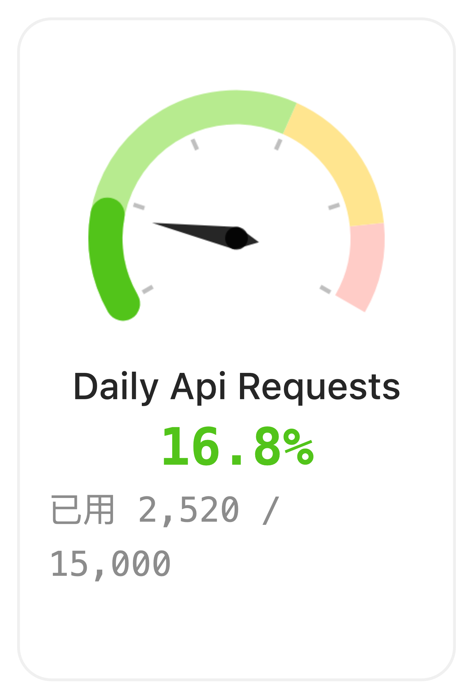
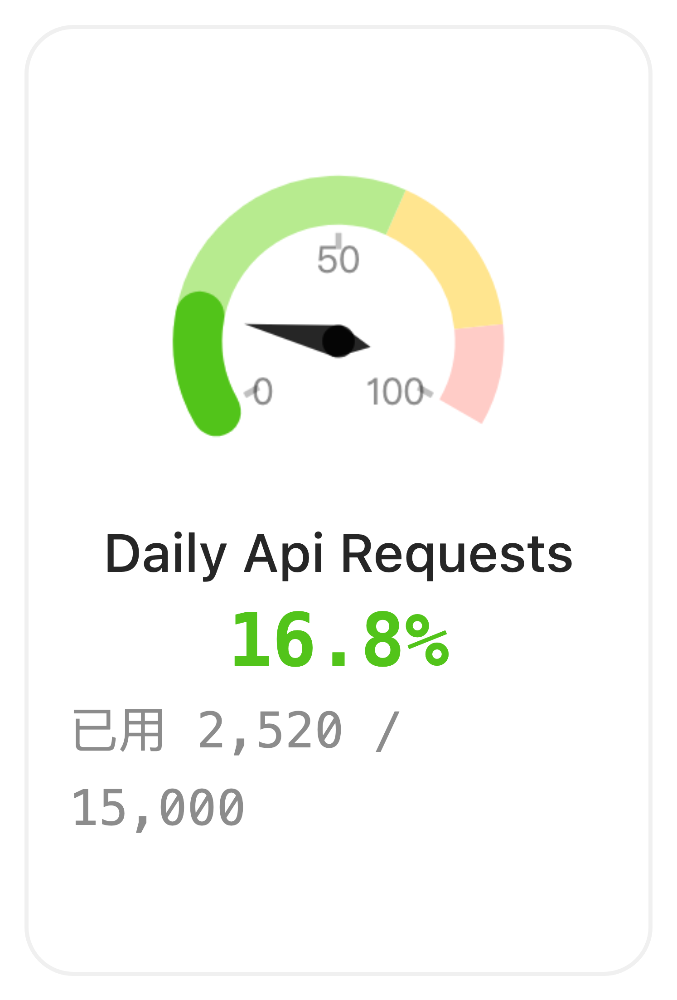
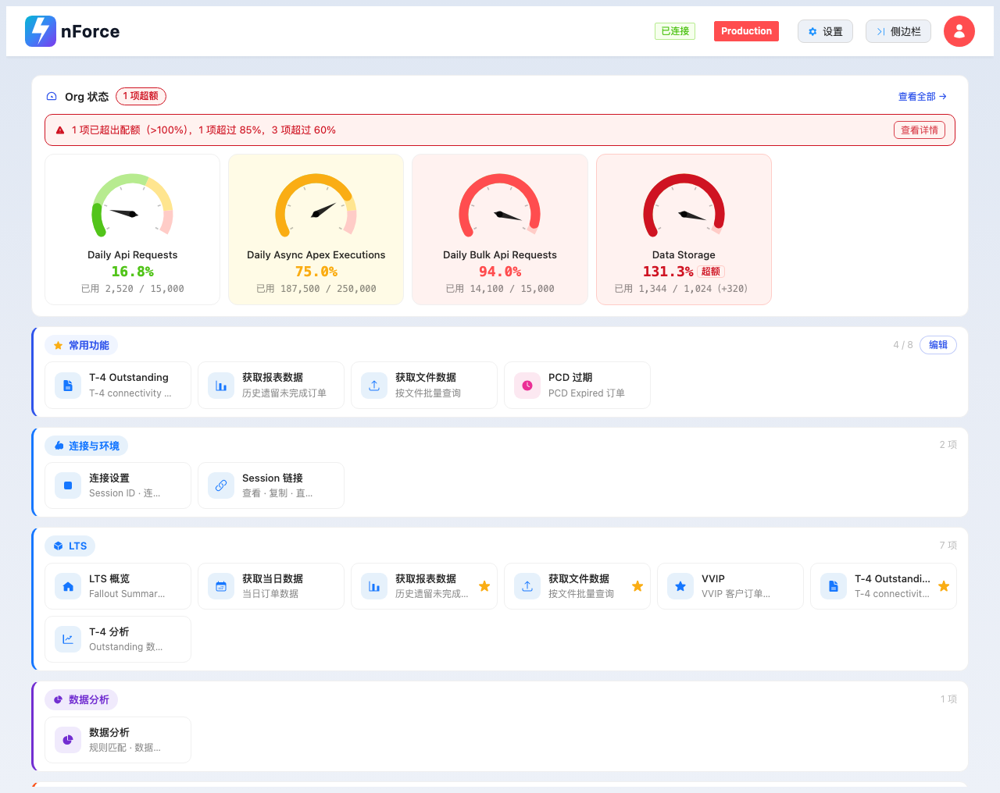
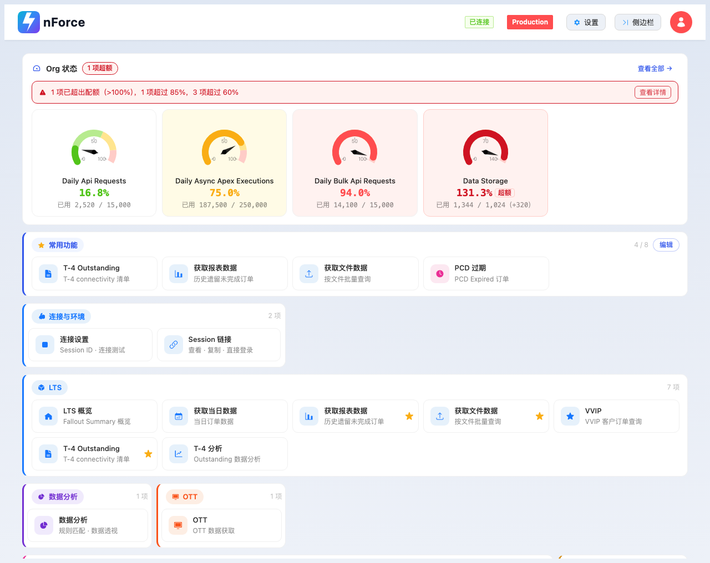
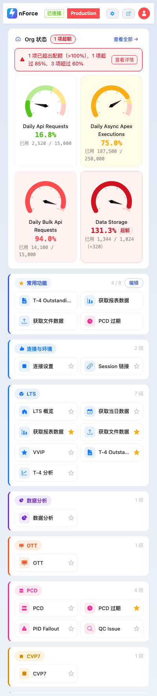
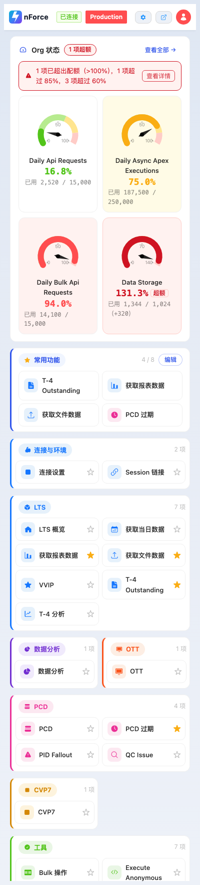
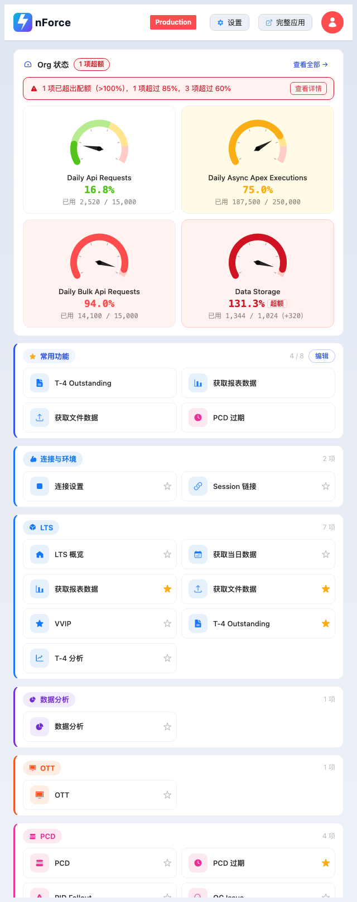
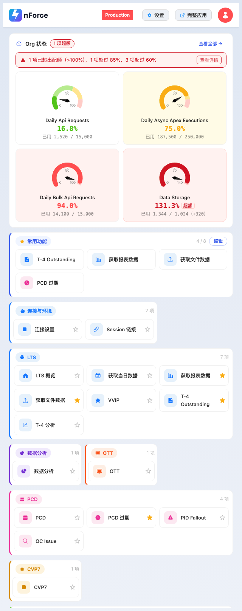

nForce Tools v4.4.0 · 2026-10-13 · 第三轮，承接第二轮结尾那份「还没动的」6 项清单
前两轮解决的是「统一」（按钮形状 / 说明层级 / 空状态），这一轮解决「读得准、排得下」——
6 项里有 4 项必须靠具体数字才能确认改没改好，所以每一项都带量测
报告分三层：① – ⑥ 是清单逐项；⑦ 是在做这些改动时踩到的两个 CSS 坑
（都会静默失败，不报错、不抛异常）；⑧ 是我改完仍然留着、并说明为什么留着的三处。
所有数字都能用 round3/ 目录里同 case 同尺寸的前后截图复看。
首页 Org 状态卡的四张小仪表盘只有色带和指针，一个数字都没有—— 指针指到哪、离 60% 那条线还有多远，全靠猜。而它旁边明明写着「16.8%」。
改前是 splitNumber: 5 + axisLabel.show: false：画出 6 道分度线，
却一个标数都不给。而且分区色带的界线在 60% / 85%，分度线落在 20% 的整数倍上——
85 那条界线两边没有任何刻度，刻度尺和色带在说两件事。
splitNumber: 2, // 5 → 2：分度线落在 0 / 中点 / 上限 三个锚点上
radius: "78%", // 100% → 78%：给刻度数字让位
axisLabel: { show: true, distance: 10, fontSize: 9, color: GAUGE_LABEL }| 项 | 改前 | 改后 |
|---|---|---|
| 刻度分度线 | 6 道（0/20/40/60/80/100） | 3 个锚点（0 / 中点 / 上限） |
| 刻度数字 | 不显示 | 0 · 50 · 100（Data Storage 是 0 · 70 · 140） |
| 半径 | 100% | 78% |
| 数字颜色 | — | rgba(0,0,0,0.45) = --text-secondary |
半径必须一起收：radius: 100% 时 0 和上限两个数字被顶到画布外，
实测直接裁掉。首页那张画布只有 132 × 104（宽由高决定），
9px 是三个数字能同时容下、又不和指针打架的上限；distance: 4 时
「0」正好落在分区带里，被进度弧的圆头盖掉一半，所以给到 10。


var()。
ECharts 是 canvas 绘制，CSS 变量和数学函数一律不生效，颜色必须以字面量写进 JS。
这里登记了三个常量并逐个注明对应哪个令牌：
GAUGE_TEXT / GAUGE_TICK / GAUGE_LABEL。
改的时候改的是令牌值，JS 里那行注释跟着一起改 —— 这是这个项目唯一允许写死十六进制的例外。
首页 8 个分组里有 5 个只装了 1~2 项（数据分析 / OTT / CVP7 / 杂项 / 连接与环境）。
改前每个 .launcher-group 都是 width: 100% 的块纵向排列，
于是「数据分析」这种只有一张磁贴的分组也占满整行，右侧 4/5 全空。
改成一张棋盘：每个分组按「自己的磁贴数」占 1..N 格，1 项的分组只占 1 格， 两个 1 项的分组就能并排站一行。
#launcher-groups { display: grid;
grid-template-columns: repeat(var(--cols), minmax(0, 1fr));
gap: 12px 8px; align-items: start; }
.launcher-group { --span: min(var(--tile-count, var(--cols)), var(--cols));
grid-column: span var(--span); }
--tile-count 由 biz/ui_layout.js 写在行内（数据侧），
CSS 只做 min(格数, 列数)。min() 写在 span 后面
实测可用：注入 --n:2 / --c:3 时计算值解成整数 span 2，
宽度与写死的 span 2 完全一致 —— 没有它就得为每一档、每个条目数各写一条规则。
| 宽度 | 棋盘总高 改前 → 改后 | 每组一行 → 并排 |
|---|---|---|
| 400px | 1267px → 1153px | 8 行全是「1 个分组」→ 数据分析 + OTT 并排（7 行） |
| 560px | 1163px → 1153px | 同上 |
| 1280px | 1154px → 897px（−22%） | 8 行 → 6 行：数据分析+OTT、PCD+CVP7 各并一排 |


做棋盘时发现列数是三条互相打架的规则叠出来的：基础 minmax(176px)、
≤768px 硬写 1fr 1fr、≤560px 又改成 minmax(138px)。
结果列数非单调：
viewport 300 340 360 400 480 560 640 768 900 1280
改前列数 1 1 2 2 2 3 2 2 4 6 ← 560→640 掉回 2 列
改前磁贴宽 224 264 139 157 197 156 272 336 193 188 ← 磁贴从 156 涨到 336
改后列数 1 1 2 2 2 2 3 3 4 5
改后磁贴宽 224 264 139 157 197 237 179 221 193 227
560px 用 3 列（156px）排，640px 反而掉回 2 列、磁贴涨到 336px，800px 又跳回 3 列。
现在收敛成一条单调阶梯，唯一来源是 .launcher-view 的 --cols：
≤359px → 1 · 360~599 → 2 · 600~899 → 3 · 900~1099 → 4 · ≥1100 → 5
带宽上下界是按「磁贴 132~271px」定的：下限保证最长标签不截断，
上限来自 .launcher-view 的 max-width: 1200px——
6 列时每格只有 193px，描述又开始截断（见下一节）。
上一轮修掉的两个根因（锁图标白吃一个 gap、星标预留三套值）之外，还剩两类截断。 这一轮把 描述交给「列数 × 最小轨道宽」，把 标签交给「窄档折行」。
grid-template-columns: repeat(auto-fill, minmax(176px, 1fr)) 在 1280px 下
算出 6 列、每格 ~188px，扣掉图标 34 + 间距 10 + 让给星标的 30 + 左右内边距，
描述只剩 ~100px —— 最长的那条「T-4 connectivity 清单」要 120px。
改后由 --span 决定列数，1280px 排 5 列（每格 227px）。
附带好处：「1 项的分组」里那张孤零零的磁贴，宽度与整行分组里的磁贴完全一致了——
这是同一个 --span 变量的副作用，不是巧合。
描述在 ≤768px 本来就是 display: none，磁贴右半边是空的——
标签却仍然 nowrap + ellipsis。「T-4 Outstanding」要 126px，
而 2 列 157px 的磁贴只剩 95px，于是被截成「T-4 Outstandi…」。
既然纵向空着，就没必要靠省略号收尾：
@media (max-width: 768px) {
.tile-desc { display: none; }
.tile-label { /* 最多折两行，不再截断 */
white-space: normal; display: -webkit-box;
-webkit-box-orient: vertical; -webkit-line-clamp: 2;
}
}限两行是防更长的名字把磁贴撑成三行高。「Outstanding」「Anonymous」这种最长的单词约 77px， 2 列 157px 的磁贴放得下，所以折行一定成立、不会退化成二次截断。
| 宽度 | 列 / 磁贴宽 改前 → 改后 | 标签截断 | 描述截断 |
|---|---|---|---|
| 400px | 2 列 / 157 → 2 列 / 157 | 5 → 0 | 描述隐藏 |
| 480px | 2 列 / 197 → 2 列 / 197 | 1 → 0 | 描述隐藏 |
| 560px | 3 列 / 156 → 2 列 / 237 | 5 → 0 | 描述隐藏 |
| 640px | 2 列 / 272 → 3 列 / 179 | 0 → 0 | 描述隐藏 |
| 768px | 2 列 / 336 → 3 列 / 221 | 0 → 0 | 描述隐藏 |
| 900px | 4 列 / 193 → 4 列 / 193 | 1 → 1 | 9 → 10 |
| 1280px | 6 列 / 188 → 5 列 / 227 | 2 → 0 | 12 → 0 |
唯一残留的是 900px 那一条：4 列 193px 时描述可用 ~116px，而最长要 126px，
有 9~10 条压在临界线上（改前同样是 9 条，不是这轮引入的）。想让这一档彻底干净，
把 4 列的阈值从 900px 抬到 1000px 即可 —— 代价是 900~999px 只排 3 列。




星标（☆ / ★）和常用功能区编辑态的 ←
→ × 都是
<span role="button" tabindex="0">。
role + tabindex 只承诺了「能被 Tab 聚焦、被读屏念成按钮」，
不附带任何键盘行为 —— 浏览器只对真正的 <button>
自动把 Enter / Space 翻成 click。原来这里只有 click 委托，于是键盘用户
Tab 到星标、按回车，什么都不会发生。
document.addEventListener("keydown", (e) => {
if (e.key !== "Enter" && e.key !== " " && e.key !== "Spacebar") return;
const target = e.target.closest(".tile-fav-btn, .tile-edit-btn");
if (!target) return;
e.preventDefault(); // Space 不拦会把页面往下滚
target.click(); // 走同一条委托逻辑，不复制一份动作代码
});顺手补齐了读屏要的两个属性（sighted 用户看 ★ / ☆，读屏用户只能靠 aria）：
aria-pressed="${favorited ? "true" : "false"}"
aria-label="${favorited ? "从常用功能移除" : "加入常用功能"}" // 不加会念出 "★" 这个字符本身
用 CDP 派发真实键盘事件（不是 element.click()）走一遍：
初始 aria-pressed=false ☆ 收藏数 4
Tab ×11 焦点落在 .tile-fav-btn
Enter aria-pressed=true ★ 收藏数 5 ← 改前：无变化
Space aria-pressed=false ☆ 收藏数 4
.tile-fav-btn 默认 opacity: 0（只在 .tile-cell:hover
时才浮出来），可它同时带着 tabindex="0" ——
键盘用户 Tab 过来时，焦点落在一个完全看不见的元素上，屏幕上零反馈。
补上焦点样式后实测：Tab 命中时 :focus-visible 匹配、
opacity 稳定为 1。
.tile-fav-btn:focus-visible, .tile-edit-btn:focus-visible {
opacity: 1; outline: 2px solid var(--primary-color); outline-offset: 1px;
}
.tile:focus-visible { outline: 2px solid var(--primary-color); outline-offset: 2px; }outline、鼠标 hover 走变色 + 阴影，两条路径区分开 ——
「鼠标正悬停」和「键盘已聚焦」不会互相冒充。
.tile-fav-btn 上有 transition: opacity 0.18s，
:focus-visible 刚匹配时读 opacity 会读到过渡起点（0）。
这不是 bug，要等过渡走完再读（实测 +500ms 为 1）。
设置页那四个行式按钮（连接设置 / 布局配置 / 插件偏好 / 项目说明）在 400px 下高度是 72 / 72 / 86 / 72 —— 「插件偏好」的描述换到了第二行。根因是高度由图标盒 （42px）加内边距（14px×2）撑出来，一旦描述换行就跟着漂。
| 宽度 / 行 | 改前高 | 改后高 | 图标盒 |
|---|---|---|---|
| 400px · 连接设置 | 72px | 65px | 42 → 34px |
| 400px · 布局配置 | 72px | 65px | 42 → 34px |
| 400px · 插件偏好 | 86px | 65px | 42 → 34px |
| 400px · 项目说明 | 72px | 65px | 42 → 34px |
.section-icon、.tile-icon 同尺寸、同 9px 圆角。nowrap + ellipsis）：描述是补充信息，
标签已经说明这一行是干什么的，允许换行只会让四行各走各的高度。
SOQL 导出 / Bulk 操作在 1280px 下，表单缩成一条窄条水平居中，
左右各留 400 多像素的白。这不是 max-width 的问题（限宽本来就是有意的），
是限宽那层包裹根本没占满可用宽度：
| 页面 | 可用父宽 | 包裹层宽 改前 → 改后 | 左空 改前 → 改后 | max-width |
|---|---|---|---|---|
SOQL 导出（#section-23） |
1166px | 313px → 1000px | 427 → 83px | 1000px |
Bulk 操作（#section-15） |
1166px | 298px → 800px | 434 → 183px | 800px |
左右空白相等（83/83 与 183/183）说明改后是「占满可用宽度、到 max-width 为止、再居中」。
.section-content > [class*="u-maxw-"] { width: 100%; }width，不动 max-width —— 两者不是同一个属性，不存在覆盖关系。
并且限定为 .section-content 的直接子元素：输入框、下拉框这些自己带
u-maxw-480 / u-maxw-360 的控件不在这一层，不会被误伤（复核过，仍是 480 / 360）。
两个都是静默失败：不报错、不抛异常、页面照常渲染，只有一个属性悄悄不生效。
calc() 里的乘法有顺序
分组内边距要随格数收缩（1 格 6px → 5 格 14px），公式 4px + 2 × 格数。
写成下面第一种，整条 padding 被丢弃：
padding: 10px calc(4px + 2 * var(--span)); /* ✗ padding-left 计算值回落成 0px */
padding: 10px calc(4px + var(--span) * 2px); /* ✓ 8px（--span=2 时） */
原因：--span 的值是一个 min() 表达式，而
「数字 × 数学函数」不是合法语法（数学函数只能出现在乘号的左侧被乘／右侧乘数位置，
且参与运算的另一边必须是数字字面量……反过来写就解析失败）。
最难发现的地方在于：同一条规则里的 grid-column: span var(--span)
照常生效 —— 只有 padding 这一个属性没了，看起来像「公式算错」而不是「语法被拒」。
/tmp/t-calc.mjs）：只有
var(--span) * 2px（乘号后置）与纯 min() 两种算得出值，
2 * var(--span)、calc(2*var(--span)*1px) 这类全部回落成 0。
auto 外边距会否掉 stretch
第 6 节那个「窄条居中」的直接根因。.section-content 是
align-items: stretch 的纵向 flex，包裹层带 u-mx-auto（左右 auto 外边距）——
按 Flexbox 规范，cross 轴上的 auto 外边距优先于 align-self，
于是 stretch 失效，包裹层退化成 shrink-to-fit，宽度由内容撑出来。
313px 正好是 SOQL textarea 的自然宽度，298px 是 Bulk 的 —— 看着像「表单被设置了窄宽度」，
实际是「宽度从来没被设过」。
| 现象 | 为什么留着 |
|---|---|
| 1280px 第一行「连接与环境」只占 2/5 格，右侧留白。 | 棋盘按分组顺序贪心排布。加 grid-auto-flow: dense 能让后面的
1 项分组回填这些空格（1280px 从 6 行缩到 5 行），但会打乱用户在「布局配置」里
亲手排的分组顺序 —— 一个 1 项分组会跳到「连接与环境」旁边去。
顺序是用户配置的语义，密度不是，所以不开。 |
| 900~999px 有 9~10 条描述压在截断临界。 | 4 列 193px 时描述可用 ~116px，最长要 126px。这是唯一残留的临界档， 改前同样是 9 条。要让干净就把 4 列阈值从 900 抬到 1000，代价是这一档掉到 3 列。 |
SOQL 查询输入框仍是 480px 上限（u-maxw-480）。 |
有上限本身是合理设计（一行 SQL 也不会写 1000px 宽），只是现在外面那层撑开了，
对比之下显得窄。想放开的话改 index.html 里的工具类即可。 |
| 检查 | 结果 |
|---|---|
npm run check:ui（A–P 组） |
ERROR 0 · WARN 0 · INFO 0 （磁贴 24 · section 29 · 图标映射 72 · 硬编码色 0 · 裸 console 0） |
npx jest |
157 passed / 5 suites（与基线一致） |
截图套件 · src（panel-shot.mjs --base=:8765） |
退出码 0 横向溢出 0 · 画布未跟随 0 · 停错 section 0 · 期望不符 0 · 请求版本不符 0 |
截图套件 · dist（--base=:8766） |
退出码 0 同上五条全 0 |
反向自检 neg-cases.json |
退出码 1（期望）
停错 section 1 个 · 期望不符 2 个 · 请求版本不符 1 个 → FAIL，与技能文档逐字一致 |
| 真实键盘事件（Enter / Space 派发到星标） | aria-pressed false→true→false · 收藏数 4→5→4 |
键盘焦点可见性（:focus-visible） |
匹配 · opacity 0 → 1（等过渡走完） |
| 列数单调性（300 → 1280 共 11 档） | 1 / 2 / 2 / 2 / 2 / 2 / 3 / 3 / 4 / 5 / 5，单调不回头 |
| 磁贴宽度一致性（1 格 vs 5 格分组） | 218px vs 227px（差 9px）；内边距固定时是 202 vs 227（差 25px） |
| 芯片对齐（分组标题左边缘竖线） | 小分组与大分组 chipX 均为 53px |
| 横向溢出（300 / 400 / 1280 三档） | pageScroll 0 · docScroll 0 |
npm run build → dist |
构建成功 · 逐字复制 31 个扩展文件 |
停错 section 1 个 → FAIL，红的是
prefs-panel-300（链式点击 settings-nav-btn,[data-goto='28']，
停在了 section-21 而不是 28）。同一轮 dist 跑的是同一个用例、同一份 CSS，却通过了；
单独重跑这条 3/3 全过，完整矩阵重跑也全绿 —— 判定为时序抖动，不是回归。
根因写在 shim.js 自己的注释里：链式点击两步之间只留 CLICK_STEP_MS = 200，
而上一步的 showSection() 会触发视图切换，第二步点下去时
app.js 里 .settings-row 的监听可能还没绑上 ——
现象是「点了没反应」，但看起来跟真失败一模一样。
所以看到这一条红时，先单独重跑再下结论。
截图：round3/before/ 与 round3/after/（各 7 张，同 case 同尺寸；
gauge-400 是 3× 放大裁切，用于看刻度数字）。
量测脚本：/tmp/t-r3side.mjs（列数 / 棋盘 / 截断 / 设置行 / 表单，一套指标两边跑）、
/tmp/t-trunc.mjs、/tmp/t-kbd.mjs（真实键盘）、
/tmp/t-fv.mjs（:focus-visible）、/tmp/t-calc.mjs（8 种 calc 写法）。